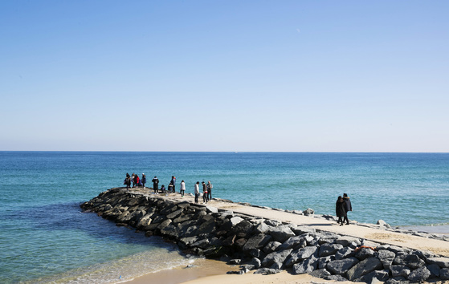

경포해변
강원도 강릉시 안현동에 자리한 경포대 해변은 언제나 그렇듯 여름철 최고의 해수욕장중 하나이다.
무더운 여름철, 대한민국의 젊음을 느끼고 싶다면 부산의 해운대, 강릉의 경포대를 가라는 말이 있다.
덕분에 젊은이 들이 많이 몰리면서 가족단위의 관광객들은 고성과 양양의 해수욕장으로 퍼져 나갔다.
주문진
주문진항은 동해안의 대표적인 항구로 유명하다.
터미널이 인접해 있어 교통성이 편리해 관광객들이 많이 찾는 장소기이도 하다.
주문진 항 바로 옆에는 주문진 해변이 있는데 동해안 만의 푸르름을 간직하고 있고
주변에 많은 상권들이 들어차 있어서 발걸음을 멀리 할 필요없이 싱싱하고 값싼 회를 지척에서 즐길 수 있는 장점이 있다.
또한 도깨비 촬영지로 유명한 곳이다.
도깨비 명장면 같은 사진을 찍기 위해 많은 사람들이 줄을 서있다.
경포해변
강원도 강릉시 안현동에 자리한 경포대 해변은 언제나 그렇듯 여름철 최고의 해수욕장중 하나이다.
무더운 여름철, 대한민국의 젊음을 느끼고 싶다면 부산의 해운대, 강릉의 경포대를 가라는 말이 있다.
덕분에 젊은이 들이 많이 몰리면서 가족단위의 관광객들은 고성과 양양의 해수욕장으로 퍼져 나갔다.